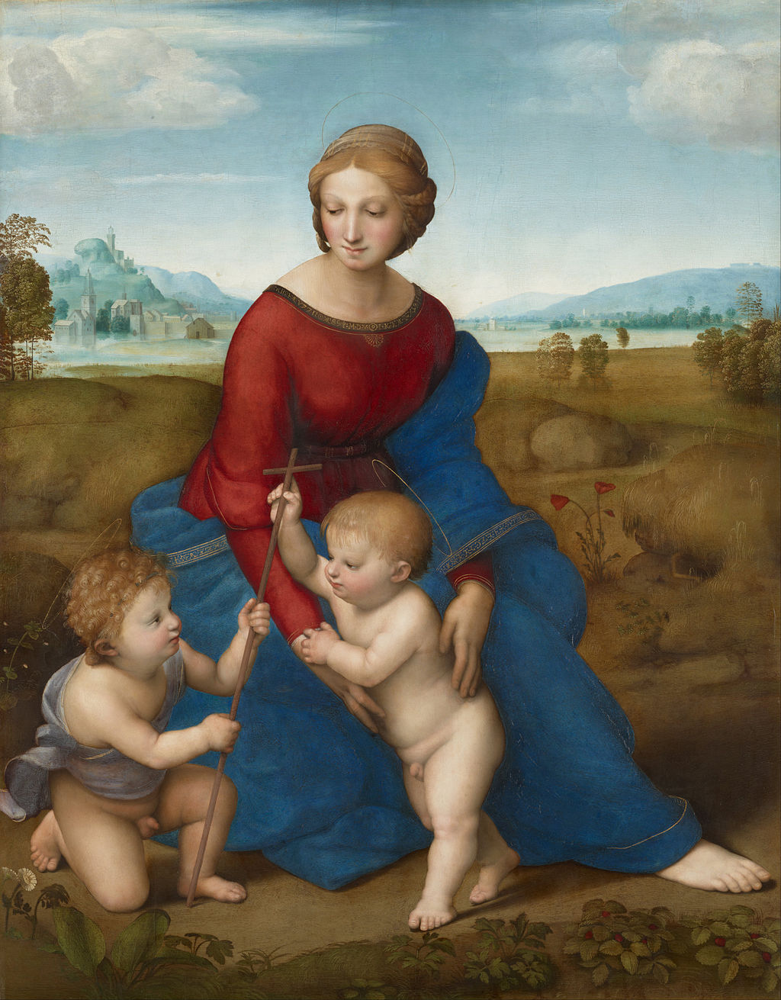

<head>
<meta charset="UTF-8" />
<meta name="keywords" content="drawing, painting" />
<meta name="description" content="drawings by Sunjy" />
<title>Sunjy</title>
<link rel="shortcut icon" type="image/x-icon" href="../../mImages/mCommon/favicon.ico" media="screen" />
<link rel="stylesheet" type="text/css" href="../../mCsses/mCommon/mCssA.css" />
<link rel="stylesheet" type="text/css" href="../../mCsses/mCommon/mCssB.css" />
<link rel="stylesheet" type="text/css" href="../../mCsses/mCommon/mCssC.css" />
<link rel="stylesheet" type="text/css" href="../../mCsses/mCommon/mCssD.css" />
<link rel="stylesheet" type="text/css" href="../../mCsses/mContent/mCssA.css" />
<link rel="stylesheet" type="text/css" href="../../mCsses/mContent/mCssB.css" />
<link rel="stylesheet" type="text/css" href="../../mCsses/mContent/mCssC.css" />
<link rel="stylesheet" type="text/css" href="../../mCsses/mContent/mCssD.css" />
</head>
<script type="text/javascript" src="../../mScripts/mContent/mContentAA.js" /></script>
<script type="text/javascript" src="../../mScripts/mContent/mContentAB.js" /></script>
<script type="text/javascript" src="../../mScripts/mContent/mContentAC.js" /></script>
<script type="text/javascript" src="../../mScripts/mContent/mContentAD.js" /></script>
<script type="text/javascript"></script> 
<script type="text/javascript">
document.write('<div class="mImgAbsolute"></div>');
/*
document.write('<p class="mFontSizeBColor" />From a white paper...</p>');
document.write('<table class="center"><tr><td>');
document.write('');
document.write('</td></tr></table>');
*/
</script>


<script type="text/javascript">
document.write('<p class="mFontSizeBColor" />Madonna in the Meadow</p>');
document.write('<p class="mFontSizeSColor" />By Raphael. “Madonna in the Meadow” depicts three figures in a meadow, all linked by looks and touching hands. The figures represent the Madonna with the Christ Child and Saint John the Baptist as a child.<br><br>The Madonna is shown wearing a gold-bordered blue mantle, set against a red dress, and with her right leg lying along a diagonal.<br><br>The blue symbolizes the church and the red Christ’s death, with the Madonna uniting the Church with Christ’s sacrifice. In her hands, she holds up Christ, as he leans forward to touch the cross held by John. The poppy refers to Christ’s passion, death, and resurrection.<br><br>The painting shows a peaceful and tender moment and was painted by Raphael while he was in Florence and depicted a landscape backdrop that places the scene in a Tuscan setting.<br><br>Saint John the Baptist was the patron of Florence, making his presence here in a Florentine environment symbolic for his audience.  The peacefulness and harmony of the painting would have been held in high regard by Renaissance patrons.<br><br>The painting is the first of a series of full-length figure compositions that portray the apocryphal encounter between the Child Jesus and the boy Baptist.<br><br>The boy Baptist is supposed to have recognized Christ as the Redeemer even in their childhood. Raphael makes this clear by letting Christ take the cross from John.<br><br>Michelangelo’s influence on Raphael is evident in this composition. The figures in the painting are arranged in a pyramidal composition.<br><br>This is something that Raphael would have studied in Leonardo’s famous drawing showing the Virgin, St. Anne, and their children, which was in another church in Florence.<br><br>The “Madonna in the Meadow” painting is also known as “The Madonna with the Christ Child and Saint John the Baptist” and “Madonna del Prato,” which means “Madonna of the Meadow.”  <br><br>Historically it has also been called “Madonna del Belvedere” because of its long residence in the imperial collection in the Vienna Belvedere.</p>');
document.write('<table class="center" /><tr><td>');
document.write('<br>The Madonna is shown wearing a gold-bordered blue mantle, set against a red dress, and with her right leg lying along a diagonal.<br><br>The blue symbolizes the church and the red Christ’s death, with the Madonna uniting the Church with Christ’s sacrifice. In her hands, she holds up Christ, as he leans forward to touch the cross held by John. The poppy refers to Christ’s passion, death, and resurrection.<br><br>The painting shows a peaceful and tender moment and was painted by Raphael while he was in Florence and depicted a landscape backdrop that places the scene in a Tuscan setting.<br><br>Saint John the Baptist was the patron of Florence, making his presence here in a Florentine environment symbolic for his audience.  The peacefulness and harmony of the painting would have been held in high regard by Renaissance patrons.<br><br>The painting is the first of a series of full-length figure compositions that portray the apocryphal encounter between the Child Jesus and the boy Baptist.<br><br>The boy Baptist is supposed to have recognized Christ as the Redeemer even in their childhood. Raphael makes this clear by letting Christ take the cross from John.<br><br>Michelangelo’s influence on Raphael is evident in this composition. The figures in the painting are arranged in a pyramidal composition.<br><br>This is something that Raphael would have studied in Leonardo’s famous drawing showing the Virgin, St. Anne, and their children, which was in another church in Florence.<br><br>The “Madonna in the Meadow” painting is also known as “The Madonna with the Christ Child and Saint John the Baptist” and “Madonna del Prato,” which means “Madonna of the Meadow.”  <br><br>Historically it has also been called “Madonna del Belvedere” because of its long residence in the imperial collection in the Vienna Belvedere." />');
document.write('</td></tr></table>');
</script>


